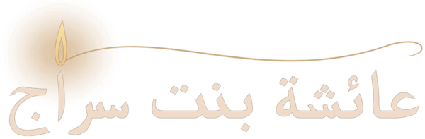
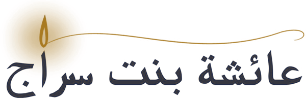

الغَاشِيَة
Сура «аль-Гашия» · 88
Покрывающее · тафсир аятов 1–26
О суре
Почему «Покрывающее»?
1
Так назвал её
сам Пророк
(мир ему и благословение Аллаха)
2
Он читал её
в пятничной молитве
и в молитвах
двух праздников
3
Аль-Гашия —
одно из имён Судного дня
: он покроет всех, от первого человека до последнего
Зачем ниспослана сура
Три цели
1
Вера в воскрешение
От неё зависит каждый наш поступок
2
Поклонение только Аллаху
Кто создал небо и горы — только Он достоин поклонения
3
Задача — напоминать
Так делали посланники, и мы идём по их стопам
Сила веры в Последний день
— Умар ибн Абдуль-Азиз, человеку, который оскорбил его, халифа
Чем сильнее вера в Последний день, тем легче душе удержаться от греха

Путь суры
От ночи — к рассвету
1–7
Судный день
униженные лица и Огонь
8–16
Рай
блаженные лица и награда
17–26
Знамения
взгляни — и напоминай
I
Часть первая · аяты 1–7
Лица униженные
День, который накроет всех — и тех, кто не смирился перед Аллахом
Аят 1
هَلْ
أَتَاكَ
حَدِيثُ
الْغَاشِيَةِ
١
«Дошёл ли до тебя рассказ о Покрывающем?»
Как «Ты слышала новость?» — вопрос будит интерес
Покрывающее окружит со всех сторон — ни выхода, ни щели
Аят 2 · остановись и подумай
وُجُوهٌ
يَوْمَئِذٍ
خَاشِعَةٌ
٢
«Лица в тот день будут униженными»
Почему Аллах начал с лица?
На лице видно всё, что у человека внутри. И лицо — место его чести и достоинства.
0
раз жарче
земного огня
Аяты 3–4
عَامِلَةٌ
نَّاصِبَةٌ
٣
تَصْلَىٰ
نَارًا
حَامِيَةً
٤
«Трудящиеся, изнурённые, будут гореть в пылающем огне»
«Представьте целый город из огня: всё в нём — огонь»
Аяты 5–7 · питьё и пища
تُسْقَىٰ مِنْ عَيْنٍ آنِيَةٍ
٥
لَّيْسَ لَهُمْ طَعَامٌ إِلَّا مِن ضَرِيعٍ
٦
لَّا يُسْمِنُ وَلَا يُغْنِي مِن جُوعٍ
٧
Питьё
Кипящий источник: кожа с лица падает ещё до глотка
Ад-дари
Колючее ядовитое растение, горькое и зловонное
Ни пользы
Не питает тело и не утоляет голод
II
Часть вторая · аяты 8–16
Лица блаженные
Награда тем, кто был стоек и удерживал душу от страстей
Аяты 8–9
وُجُوهٌ
يَوْمَئِذٍ
نَّاعِمَةٌ
٨
لِّسَعْيِهَا
رَاضِيَةٌ
٩
«Лица в тот день будут блаженствующими, довольными своим усердием»
Старались в этом мире — и порадовались своему старанию
Аяты 10–11
فِي جَنَّةٍ
عَالِيَةٍ
١٠
لَّا تَسْمَعُ فِيهَا
لَاغِيَةً
١١
«В высоком саду, где не услышишь пустословия»
Ни лжи, ни ругани — в этом мире так не бывает нигде
Аят 12
فِيهَا
عَيْنٌ
جَارِيَةٌ
١٢
«Там — текущий источник»
Почему именно вода?
Душа любит смотреть на текущую воду и отдыхает при этом
Аяты 13–16
Отдых после трудов
فِيهَا سُرُرٌ مَّرْفُوعَةٌ
١٣
وَأَكْوَابٌ مَّوْضُوعَةٌ
١٤
وَنَمَارِقُ مَصْفُوفَةٌ
١٥
وَزَرَابِيُّ مَبْثُوثَةٌ
١٦
«возвышенные ложа»
«поставленные кубки»
«подушки рядами и ковры»
III
Часть третья · аяты 17–26
Взгляни и напоминай
Что требуется от меня, о Господь, чтобы оказаться на высших ступенях?
Аят 17
أَفَلَا
يَنظُرُونَ
إِلَى
الْإِبِلِ
كَيْفَ
خُلِقَتْ
١٧
«Разве они не смотрят на верблюдов, как они сотворены?»
Огромный, а встаёт с колен с грузом — и даже ребёнок ведёт его за повод
Не любоваться, а размышлять — это поклонение
Аят 18
وَإِلَى السَّمَاءِ كَيْفَ رُفِعَتْ
١٨
«И на небо, как оно возвышено?»
Крыша без видимых опор — и ни одной трещины
«Обрати взор ещё дважды…» — сура «аль-Мульк»
Аят 19
وَإِلَى الْجِبَالِ كَيْفَ نُصِبَتْ
١٩
«И на горы, как они водружены?»
Стоят на земле как несокрушимые твердыни
Кто сделал их такими крепкими?
Аят 20
وَإِلَى الْأَرْضِ كَيْفَ سُطِحَتْ
٢٠
«И на землю, как она распростёрта?»
Ибн Аббас: кто, кроме Аллаха, создаст верблюда, поднимет небо, поставит горы и расстелет землю?
Аяты 17–20
Взгляни вокруг
الإِبِل
Верблюды · 17
السَّمَاء
Небо · 18
الجِبَال
Горы · 19
الأَرْض
Земля · 20
от творений — к Творцу
Аяты 21–22
فَذَكِّرْ
إِنَّمَا أَنتَ
مُذَكِّرٌ
٢١
لَّسْتَ عَلَيْهِم
بِمُصَيْطِرٍ
٢٢
«Напоминай же, ведь ты — лишь напоминающий. Ты не надзиратель над ними»
Наше дело — донести. Наставляет только Аллах
У некоторых пророков уверовали один-два человека
Аяты 23–26
Возвращение и расчёт
إِلَّا مَن تَوَلَّىٰ وَكَفَرَ
٢٣
فَيُعَذِّبُهُ اللَّهُ الْعَذَابَ الْأَكْبَرَ
٢٤
إِنَّ إِلَيْنَا إِيَابَهُمْ
٢٥
ثُمَّ إِنَّ عَلَيْنَا حِسَابَهُم
٢٦
23
…кроме того, кто отвернулся и не уверовал
24
Аллах накажет его величайшим наказанием
25
Воистину, к Нам их возвращение
26
Затем, воистину, на Нас их расчёт
Игра
Девять звёзд
Зажгите все девять звёзд · зажжено 0 из 9
اللَّهُمَّ إِنَّا نَسْأَلُكَ رِضَاكَ وَالْفِرْدَوْسَ الْأَعْلَى
О Аллах, даруй нам Твоё довольство и высший Фирдаус
×
Вопрос 1
нажмите, чтобы увидеть ответ
اللَّهُمَّ إِنَّا نَسْأَلُكَ رِضَاكَ وَالْفِرْدَوْسَ الْأَعْلَى
О Аллах, даруй нам Твоё довольство и высший Фирдаус без расчёта и наказания
‹
›